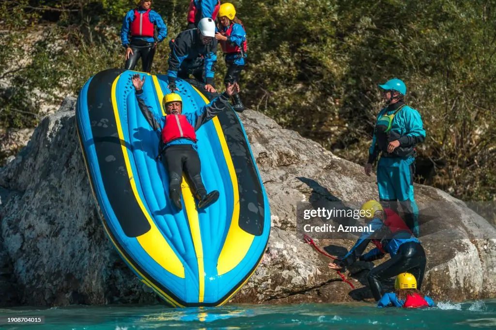
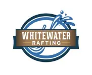
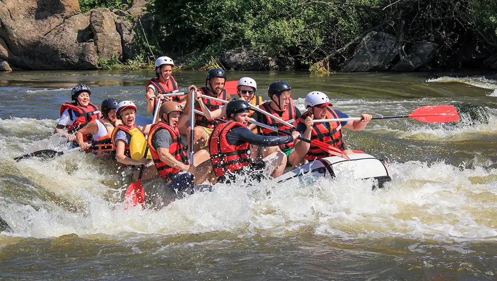
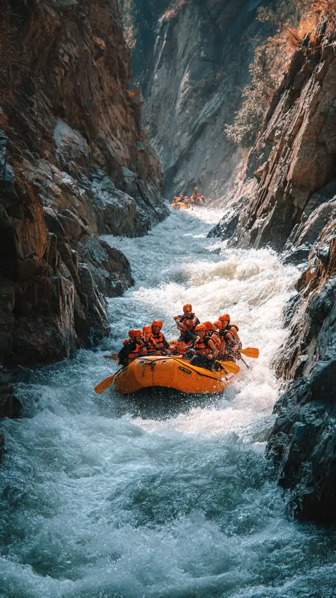
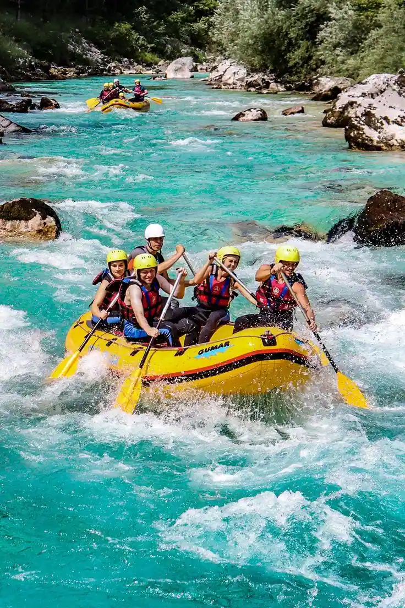
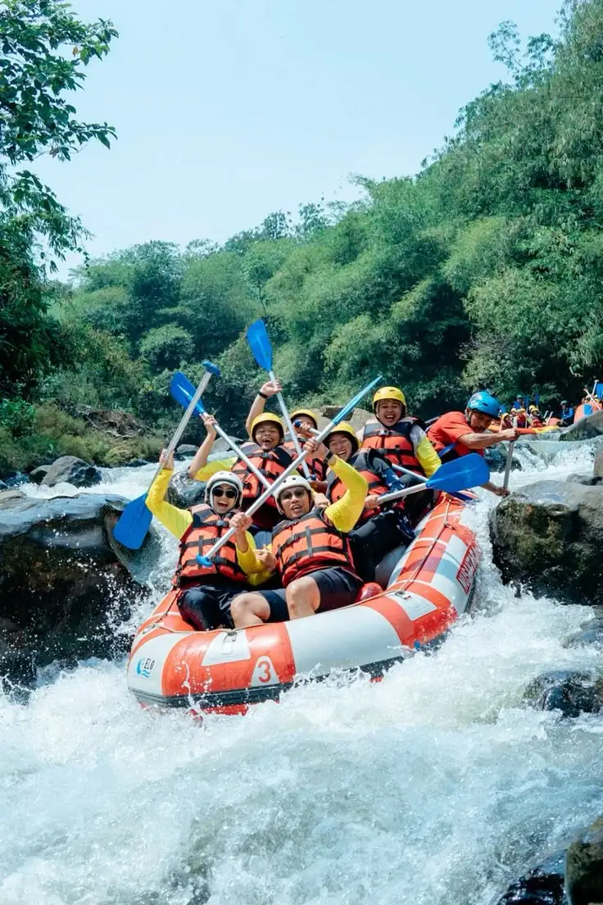
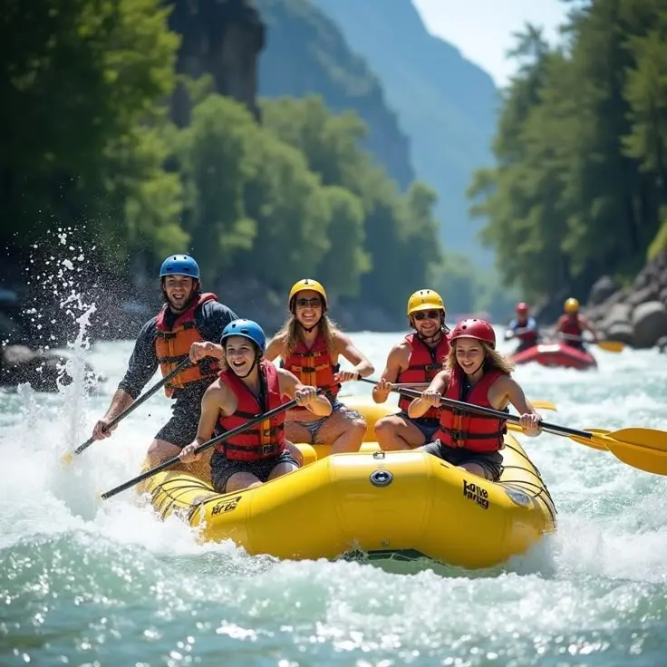
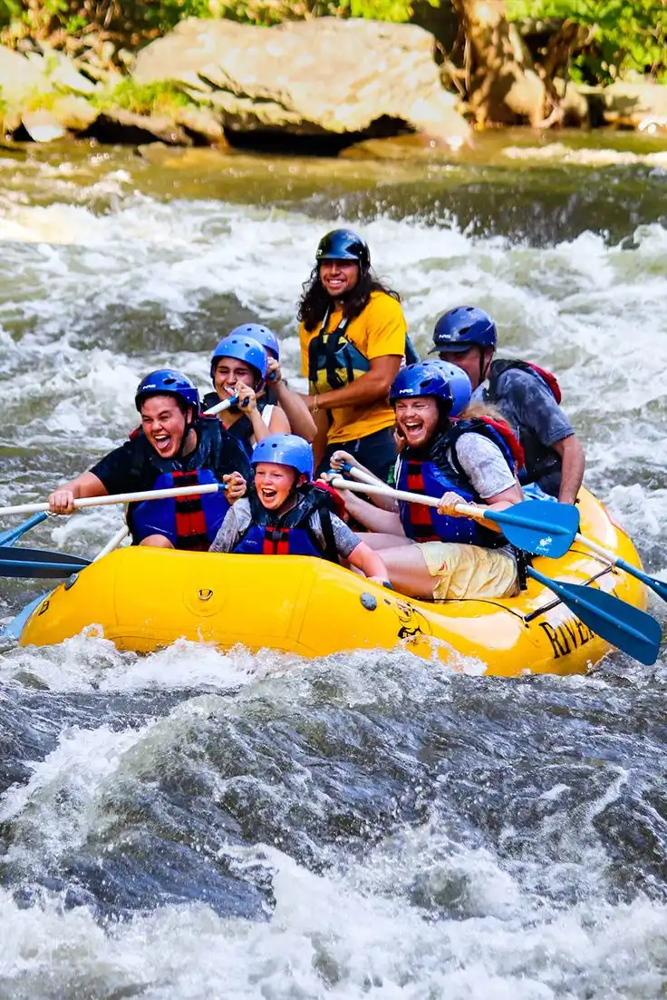

Mission & Creed
To deliver unmatched outdoor thrills with absolute safety and unforgettable hospitality. Conquer the rapids, embrace the wild, and live life without limits.



To deliver unmatched outdoor thrills with absolute safety and unforgettable hospitality. Conquer the rapids, embrace the wild, and live life without limits.
Birth of Rapid Pulse Adventures Founded in 2014 by lifelong river guides and childhood friends Jaxom Vance and Maya Lin, Rapid Pulse Adventures started as nothing more than a passion project operated out of the back of a beat-up 1998 pickup truck. Armed with just two secondhand rafts, a handful of mismatched life jackets, and a deep knowledge of the volatile Gauley River, Jaxom and Maya set out to break the mold of commercial rafting. They wanted to skip the overcrowded, assembly-line tours and offer small-group, adrenaline-fueled expeditions that felt like a wild day out with friends. By 2019, word of mouth had transformed the two-raft operation into a premier regional outfitter, expanding their territory to include extreme Class V rapids and multi-day wilderness retreats. Despite their rapid growth and a brand-new, eco-friendly basecamp headquarters, the company has stubbornly held onto its roots. Today, Rapid Pulse remains independently owned, strictly limits trip sizes for an intimate experience, and continues to ensure that every single run feels less like a structured tour and more like an authentic, unforgettable battle with the river.




